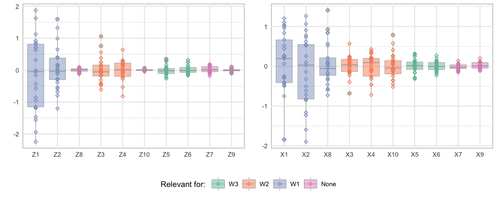

3.2 Rotation of predictor space
In order to make comments on predictor space, let us consider an example where a regression model with \(p = 10\) predictors \((\mathbf{x})\) and \(m = 4\) responses \((\mathbf{y})\). Let’s assume that only three principal components \((w_1, w_2\) and \(w_3)\) are needed to describe all four response variables. Further, let the index sets \(\mathcal{P}_1 = \{1, 2\}, \mathcal{P}_2 = \{3, 4\}\) and \(\mathcal{P}_3 = \{5, 6\}\) define the position of the principal components of \(\mathbf{x}\) that are relevant for \(w_1, w_2\) and \(w_3\) respectively. Let \(\mathcal{S}_1\), \(\mathcal{S}_2\) and \(\mathcal{S}_3\) be the orthogonal spaces spanned by each set of principal components. These spaces together span \(\mathcal{S}_k = \mathcal{S}_1 \oplus \mathcal{S}_2 \oplus \mathcal{S}_3\) which is the minimum relevant space and equivalent to the x-envelope as discussed by Cook, Helland, and Su (2013Cook, RD, IS Helland, and Z Su. 2013. “Envelopes and Partial Least Squares Regression.” Journal of the Royal Statistical Society: Series B (Statistical Methodology) 75 (5). Wiley Online Library: 851–77.).
Moreover, let \(q_1 = 3, q_2 = 3\) and \(q_3 = 2\) be the number of predictor variables we want to be relevant for \(w_1, w_2\) and \(w_3\) respectively. Then \(q_1 = 3\) predictors may be obtained by rotating the principal components in \(\mathcal{P}_1\) along with one more irrelevant principal component. Similarly, \(q_2 = 3\) predictors, relevant for \(w_2\), can be obtained by rotating principal components in \(\mathcal{P}_2\) along with one more irrelevant component and \(q_3 = 2\) predictors, relevant for \(w_3\), can be obtained by rotating principal components in \(\mathcal{P}_3\) without any additional irrelevant component. Let the space spanned by the \(q_1, q_2\) and \(q_3\) number of predictors be \(\mathcal{S}_{q_1}\), \(\mathcal{S}_{q_2}\) and \(\mathcal{S}_{q_3}\). Together they span a space \(\mathcal{S}_q = \mathcal{S}_{q_1} \oplus \mathcal{S}_{q_2} \oplus \mathcal{S}_{q_3}\). This space is bigger than \(\mathcal{S}_k\). Here, \(\mathcal{S}_k\) is orthogonal to \(\mathcal{S}_{p - k}\) and \(\mathcal{S}_q\) is orthogonal to \(\mathcal{S}_{p - q}\). Generally speaking, here we are splitting complete variable space \(\mathcal{S}_p\) into two orthogonal space – \(\mathcal{S}_k\) relevant for \(\mathbf{y}\) and \(\mathcal{S}_{p - k}\) irrelevant for \(\mathbf{y}\).
In the previous section, we discussed about constructing covariance matrix of latent structure. Figure~3.1 (left) shows a similar structure resembling the example here. The three colors represents their relevance with the three latent response components \((w_1, w_2\) and \(w_3)\). Here we can see that \(z_{1}\) and \(z_{2}\) (first and second principal components of \(\mathbf{x}\)) have non-zero covariance with \(w_1\) (first latent component of response \(\mathbf{y}\)). In the similar manner other non-zero covariances are self-explanatory.
Figure 3.1: Simulation of predictor and response variables after orthogonal transformation of principal components by a rotation matrix

In order to simulate predictor variables \((\mathbf{x})\), we construct matrix \(\mathbf{R}\) which then is used for orthogonal rotation of principal components \(\mathbf{z}\). This defines a new basis for the same space as is spanned by the principal components. In principal, there are many possible options for a rotation matrix. Among them, the eigenvector matrix of \(\boldsymbol{\Sigma}_{xx}\) can be a candidate. However, in this reverse engineering both rotation matrices \(\mathbf{R}\) and \(\mathbf{Q}\) along with the covariance matrices \(\boldsymbol{\Sigma}_{xx}\) are unknown. So, we are free to choose any \(\mathbf{R}\) that satisfied the properties of a real valued rotation matrix, i.e \(\mathbf{R}^{-1} = \mathbf{R}^t\) so that \(\mathbf{R}\) is orthonormal and its determinant becomes \(\pm 1\). Here the rotation matrix \(\mathbf{R}\) should be block diagonal as in figure~3.1 (middle) in order to rotate spaces \(\mathcal{S}_1, \mathcal{S}_2 \ldots\) separately. Figure~3.2 (left) shows the simulated principal components \(\mathbf{z}\) that we are following in our example where we can see that the principal component \(z_{1}\) and \(z_{2}\) relevant for \(w_1\) is getting rotated together with an irrelevant component \(z_{8}\). The resultant predictors (Figure~3.2, right) \(x_{1}, x_{2}\) and \(x_{8}\) will also be relevant for \(w_1\). In the figure, we can see that principal components \(x_{7}, x_{8}, x_{9}\) and \(x_{10}\) are not relevant for any responses before rotation however \(x_{8}, x_{10}\) predictors becomes relevant after rotation keeping \(x_{7}\) and \(x_{9}\) still irrelevant.
Figure 3.2: Simulated Data before (left) and after (right) rotation
Among several methods (Anderson, Olkin, and Underhill 1987Anderson, Theodore W, Ingram Olkin, and Les G Underhill. 1987. “Generation of Random Orthogonal Matrices.” SIAM Journal on Scientific and Statistical Computing 8 (4). SIAM: 625–29.; Heiberger 1978Heiberger, Richard M. 1978. “Algorithm as 127: Generation of Random Orthogonal Matrices.” Journal of the Royal Statistical Society. Series C (Applied Statistics) 27 (2). JSTOR: 199–206.) for generating random orthogonal matrix, in this paper we are using orthogonal matrix \(\mathcal{Q}\) obtained from QR-decomposition of a matrix filled with standard normal variates. The rotation here can be a) restricted and b) unrestricted. The latter rotates all principal components \(\mathbf{z}\) together and makes all predictor variables somewhat relevant for all response variables. However, the former one performs a block-wise rotation so that it rotates certain selected principal components together. This gives control for specifying certain predictors as relevant for selected responses, which was discussed in our example above. This also allows us to simulate irrelevant predictors such as \(x_{7}\) and \(x_{9}\) which can be detected during variables selection procedures.